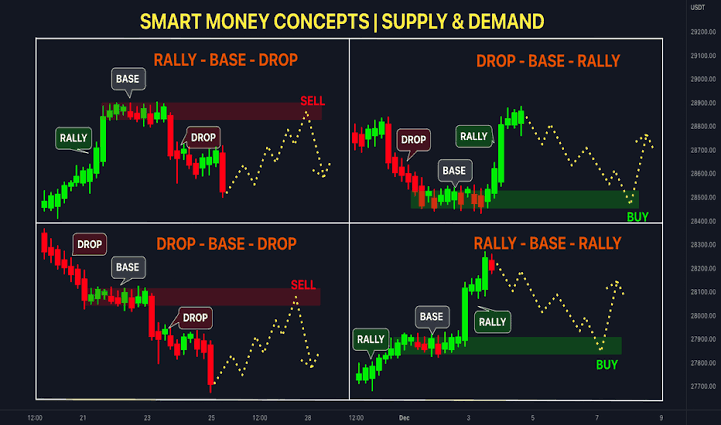

Obtenha ganhos consistentes no mercado Forex com nosso robô inteligente de trading.
Nosso robô de Forex utiliza algoritmos avançados para analisar o mercado e executar trades com precisão, 24 horas por dia, 7 dias por semana. Tenha resultados consistentes e deixe o robô fazer o trabalho para você.
Comece Agora!“Depois de começar a usar o robô, meus lucros aumentaram 10% em apenas um mês!”
- João S., Trader Iniciante
“Simplesmente espetacular! Não preciso mais monitorar o mercado o tempo todo.”
- Ana P., Investidora
Sim, nossa tecnologia utiliza os mais avançados métodos de segurança para proteger seu investimento.
A maioria dos nossos clientes nota resultados dentro das primeiras semanas de uso.
Sim, oferecemos uma garantia de 30 dias para que você possa testar o robô e ver os resultados.